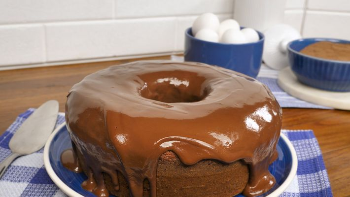

Bolo de Chocolate - Simples

Receita de bolo de chocolate
Ingredientes:
Massa
- 3 ovos
- 1 xícara e meia de chá de açúcar
- 2 xícaras de chá de farinha de trigo
- 1 xícara de chá de chocolate em pó
- Meia xícara de chá de óleo
- 1 colher de sopa de fermento em pó
- 1 pitada de sal
- 1 xícara de chá de água quente
Cobertura
- 4 colheres de sopa de leite
- Meia xícara de chá de chocolate em pó
- 1 colher de sopa de manteiga
- 1 xícara de chá de açúcar
Modo de preparo
Massa
- Bata os ovos com o açúcar, óleo, o achocolatado e a farinha.
- Adicione a água quente e por último o fermento em pó.
- Asse em forno com temperatura média por 40 minutos.
- Desenforme quente.
Cobertura
-
Coloque todos os ingredientes em uma panela e leve ao forno até que
levante fervura.
- Despeje ainda quente em cima do bolo.
Informações adicionais
Um delicioso bolo de chocolate para toda a família, para diferentes
ocasiões. Você pode dar sua incrementada também, para deixa-lo mais
saboroso!